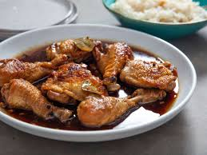
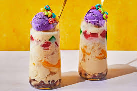

Our Filipino Cuisine
We take pride in offering a menu full of authentic Filipino dishes that will delight your guests. Each dish is prepared with fresh ingredients and time-honored recipes passed down through generations. Popular menu items include:
Lechon $250
(roast pig) – A Filipino classic, often the centerpiece of any celebration.
Adobo $20
A savory stew of chicken or pork, marinated in soy sauce, vinegar, garlic, and spices.
Sinigang $18
A tangy and savory sour soup made with tamarind, vegetables, and your choice of meat.
Pancit $15

A noodle dish traditionally served for celebrations, symbolizing long life and good fortune.
Kare-Kare $22

A rich peanut-based stew with oxtail, tripe, and vegetables, usually served with bagoong (fermented shrimp paste).
Halo-Halo $8
A popular Filipino dessert made with crushed ice, sweet beans, fruits, and leche flan topped with ice cream.